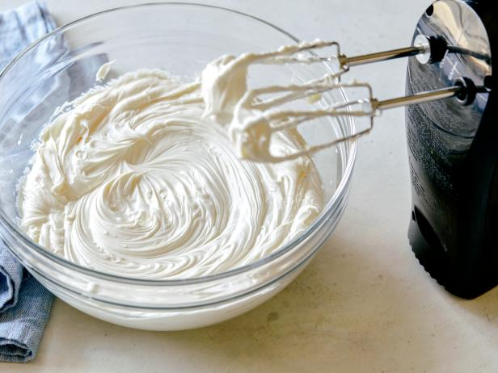

Butter Frosting

Description
Mmm good! Cream cheese frosting. You can put this on any dessert!
Ingredients
- 1 (8 ounce) package reduced-fat cream cheese, softened
- ½ cup granular sucrolose sweetener (such as Splenda®), or more to taste
- 1 (8 ounce) container frozen whipped topping, thawed
- 1 teaspoon vanilla extract
Steps
- Beat cream cheese and sucralose sweetener together in a bowl using an electric
mixer until smooth and creamy. .
- stir in whipped topping and vanilla extract until smooth